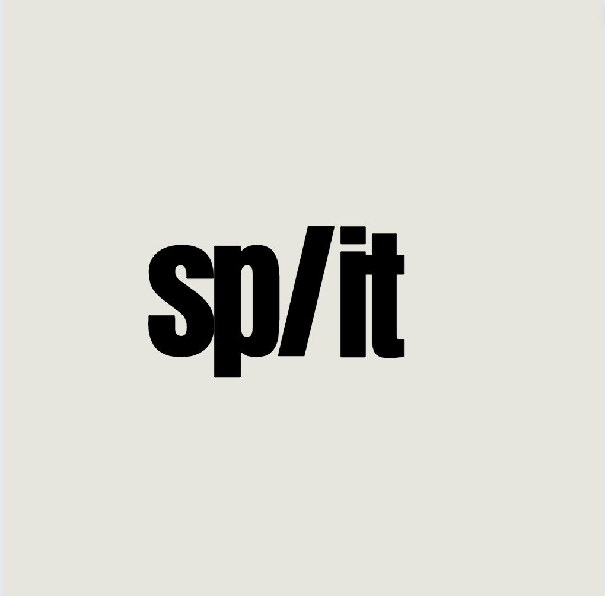

Howdy!


Split
Split is a mobile application that allows users to split bills with friends. Users can create groups, add friends, and add expenses to the group. Split will then calculate how much each person owes or is owed.
React
Firebase
Finger Speller
Finger Speller is a Python script that uses computer vision to detect ASL. The script makes use of a Random Forest Classifier to predict the letter being signed. The script can detect letters A-Z as well as some custom signs to represent spaces and punctuation.
OpenCV
SciKitLearn